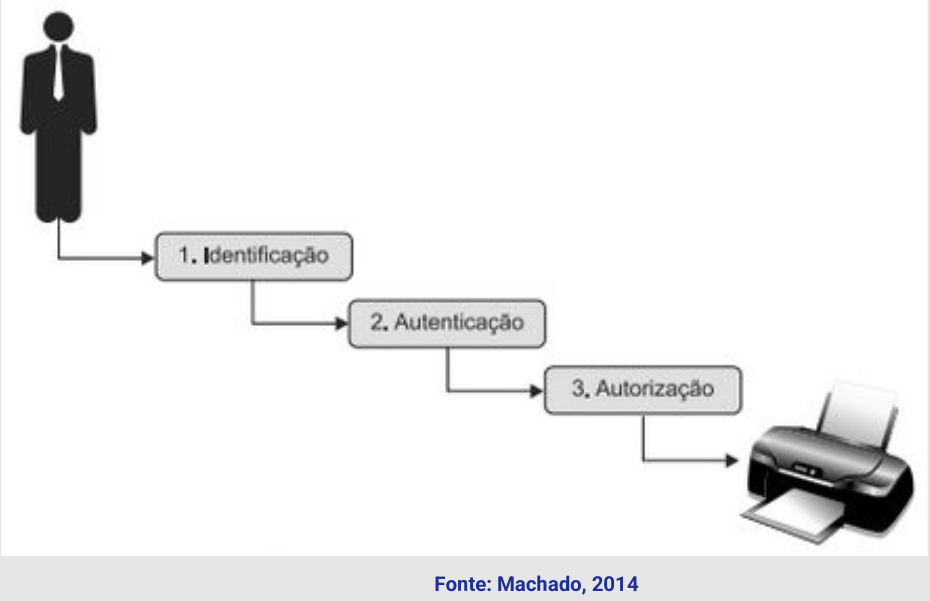
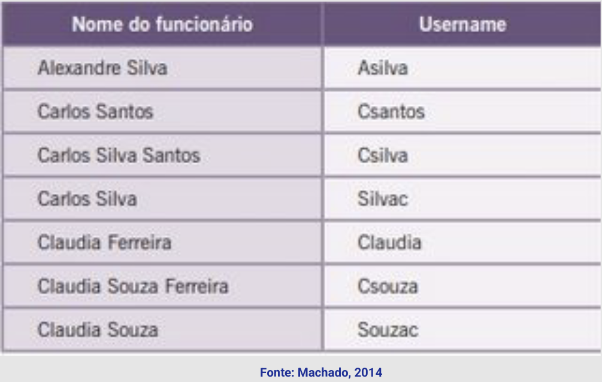
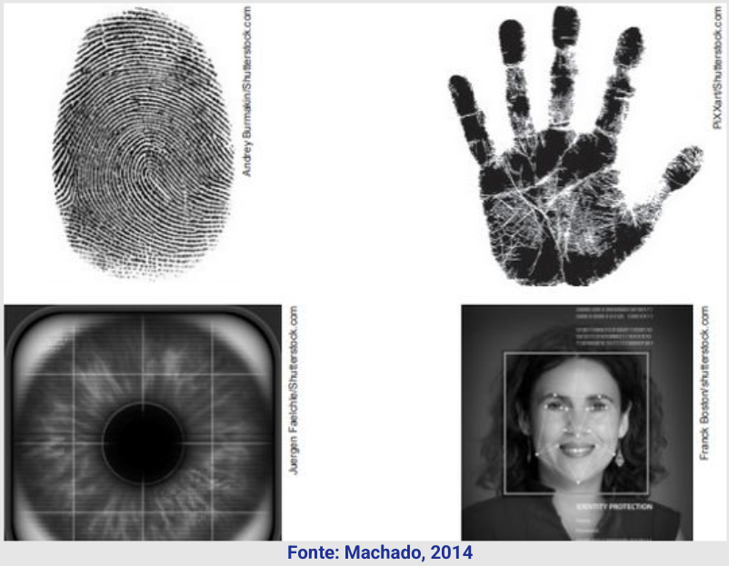
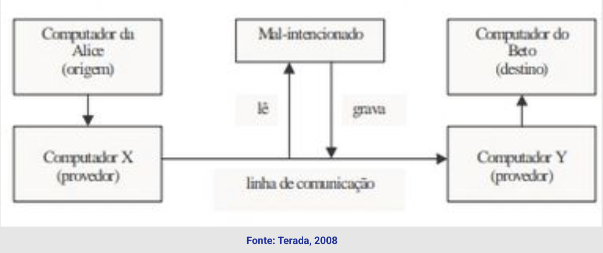

Disciplinas
Segurança da Informação. Concluído
Materiais
[UFMS Digital] Segurança da Informação - Módulo 3 - Unidade 1
Prof° ministrante: Dionisio Machado Leite Filho.
Introdução.
- Regras de acesso às redes, sistemas e bancos de dados armazenados em servidores de uma rede.
- Padrões de procedimentos, por meio da utilização de ferramentas que possam bloquear ao máximo ataques externos aos computadores da rede.
- Políticas que estabeleçam os critérios para identificar quem internamente está utilizando os recursos de uma rede de computadores, bem como o registro de quando e o que foi executado ou realizado.
Controle de acesso.
Gerenciamento da visualização de informações e da utilização dos recursos digitais de uma rede de computadores.
- Considerando as propriedades da segurança da informação - confidencialidade, integridade e disponibilidade.
- Prevenir a visualização não autorizada dos dados (confidencialidade); impedir qualquer modificação não autorizada de dados (integridade). Assegurar que os dados sejam acessado por entes autorizados (disponibilidade).
- Controle de acessos deve observar dois pontos: a identificação do usuário que se conecta em uma rede e sua autenticidade.
- Para que um usuário seja capaz de acessar um recurso de uma rede, deve ser determinado se essa pessoa é quem ela diz ser.
- Credenciais necessárias.
- Direitos e privilégios necessários para executar as ações desejadas.

Identificação- Identidade => verificada durante o processo de autenticação.
- Autenticação - processo de duas etapas: primeiro a inserção de informações consideradas públicas (um nome de usuário, número de funcionário, ou número de conta, identificação de um departamento, ou uma característica biométrica) e depois a inserção de algum tipo de informação privada (senha).
- Nomes de usuários de rede baseados no nome próprio do funcionário, porém criando regras de formação deste formato de nome.

...
Identificação - biometria
...
Autenticação- Existem três tipos gerais de autenticação para uma pessoa: algo que ela saiba, algo que ela possua, algo que ela seja.
- Senha, PIN (como em alguns telefones celulares), o nome da mãe ou segredo tipo de cofre.
- A desvantagem deste método é que uma terceira pessoa pode obter o conhecimento dessa senha e ter acesso não autorizado a um sistema.

...
- Como trocar informação entre dois nós de rede de forma segura? Criptografia.
- Troca de chaves - Diffie-Hellman.
- Com base em números primos grandes.
- TA = G^SA mod p
- TB = G^SB mod p
- Princípio utilizado pelo RSA.
- Firewall - mecanismo de segurança realizado em hardware ou software (mais utilizado).
- Implementa um conjunto de regras ou instruções.
- Faz a análise do tráfego de rede.
- Determina de acordo com as regras implementadas quais são as operações de transmissão ou recepção de dados que podem ser executadas.
- Um firewall é uma ferramenta que suporta e reforça uma política de segurança de rede.